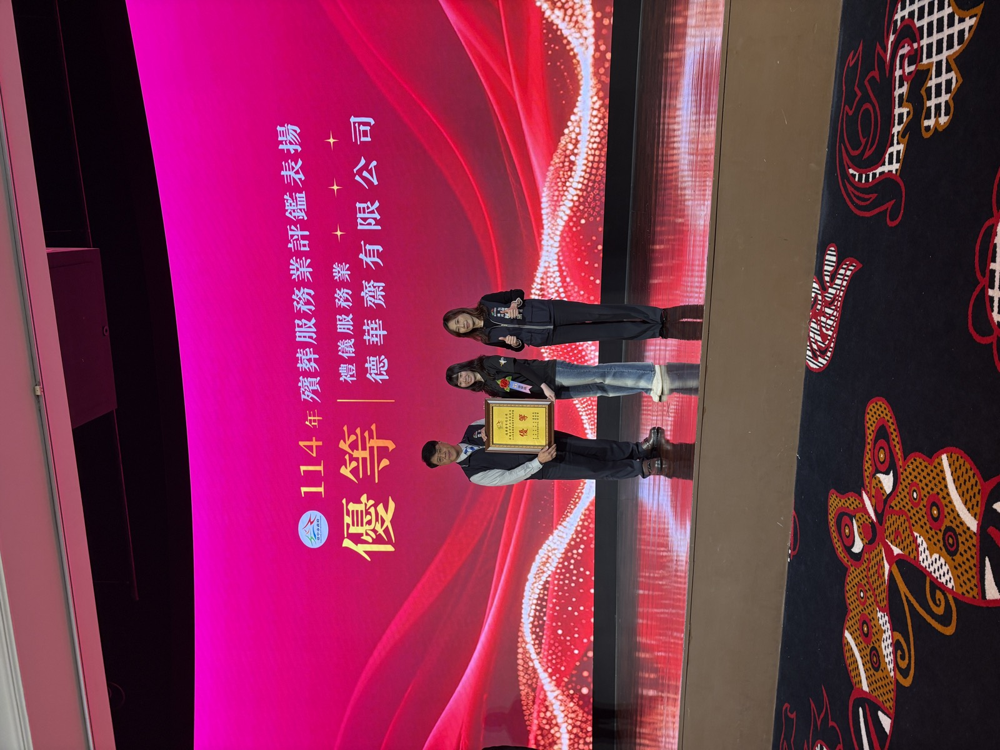
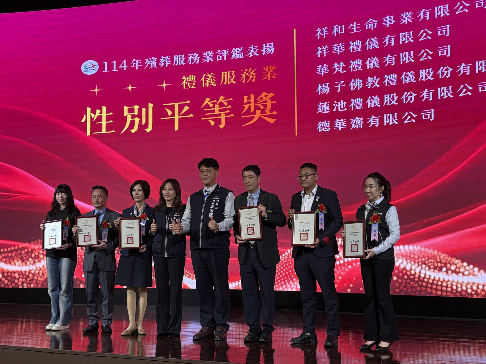
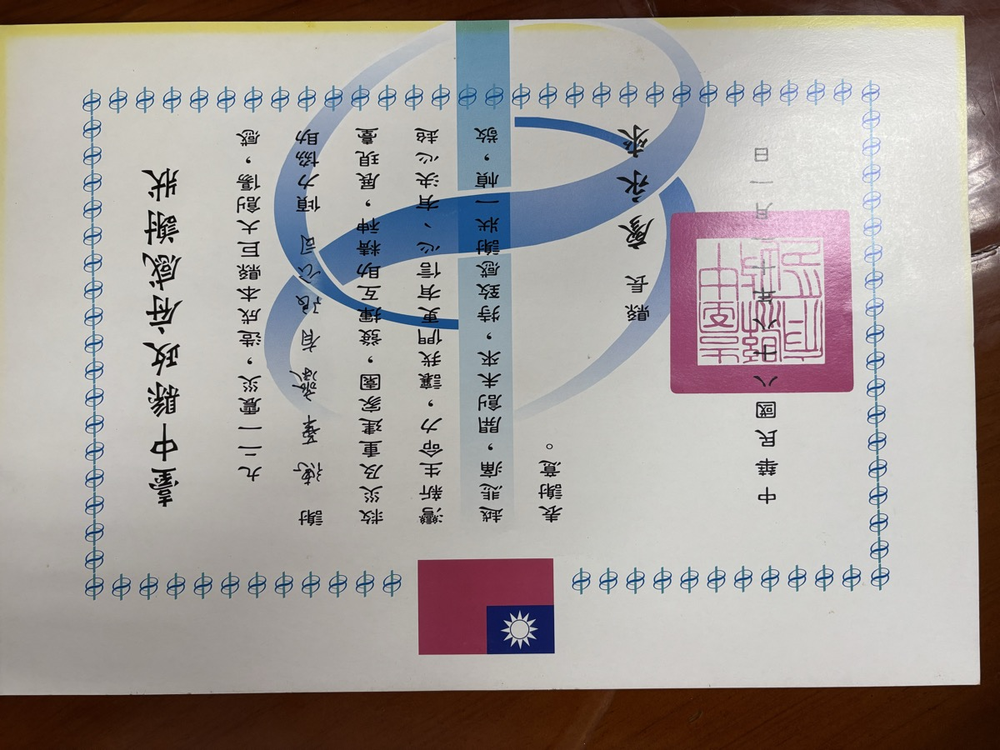
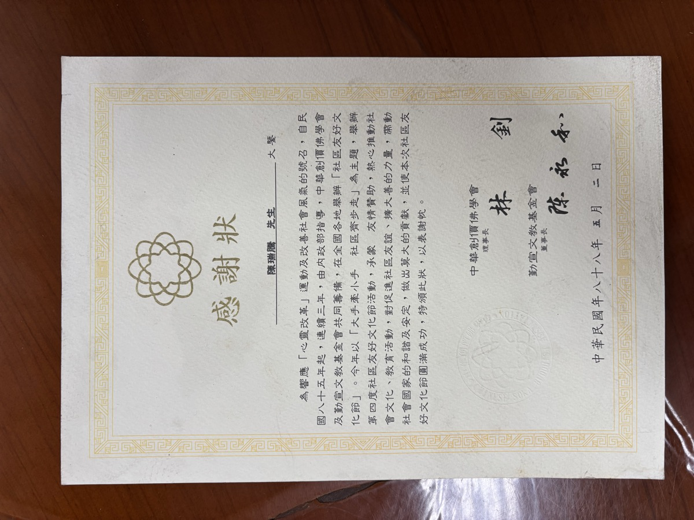
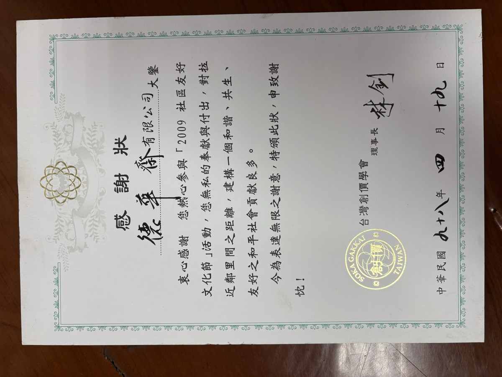
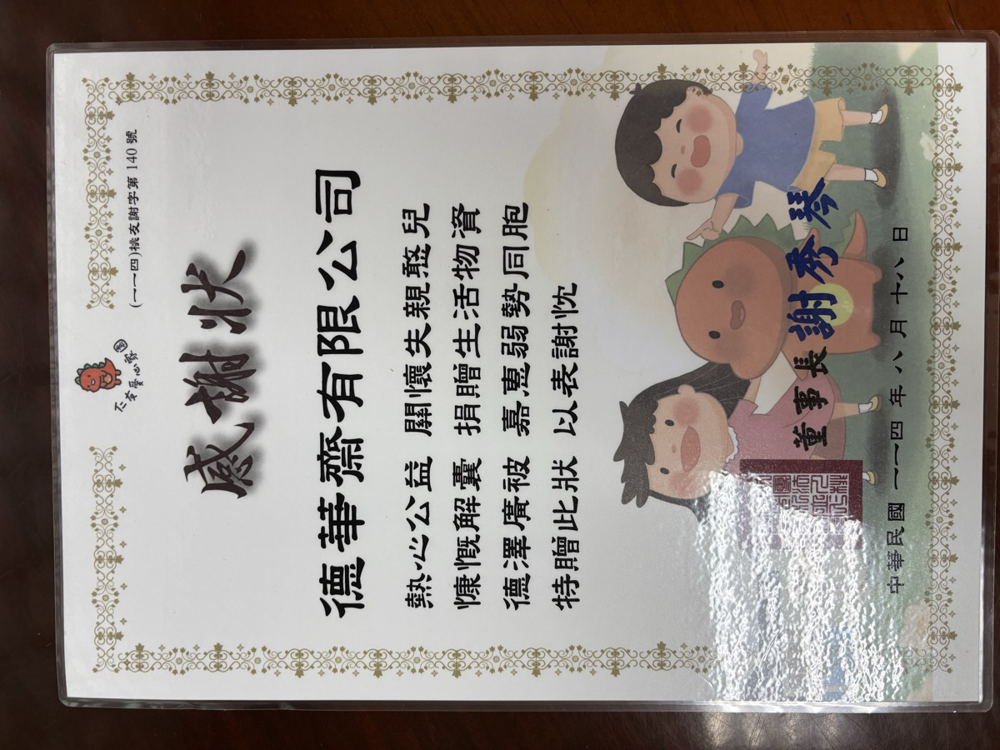

取之於社會，用之於社會
在台中市政府殯葬服務業評鑑中，德華齋的服務品質與創新作為獲得雙重肯定。

德華齋於組織經營、服務品質、消費者權益保障等面向獲評「優等」。

將性別平等意識落實於喪葬儀節之中，突破傳統性別框架，獲市府頒獎表揚。
傳統喪禮中許多角色「限男性擔任」的古例，常讓真心想盡孝的家人留下遺憾。德華齋率先突破：
辭生、分手尾錢、封釘、主奠者皆不侷限由男性擔任，女性亦可連名帶姓載於牌樓文字之上。
捧神主牌位、執魂幡，皆可由女性擔任，讓每一位子女都能親手送至親最後一程。
重視同志伴侶的治喪地位，可由伴侶具名發訃聞；司儀、禮生、誦經師、扶棺等工作角色亦無性別刻板。
數十年來持續參與地方公益，從921震災救助到關懷失親孩童，每一張感謝狀都是我們回饋社會的足跡。




長期捐助大專獎助學金，支持學子安心向學。
透過家扶基金會長期認養兒童，關懷失親孩子的成長。
持續捐助弱勢團體，並鼓勵員工挽袖捐血。
配合市府社會局、環保局調查訪問，並接受大專院校學生訪問研究。